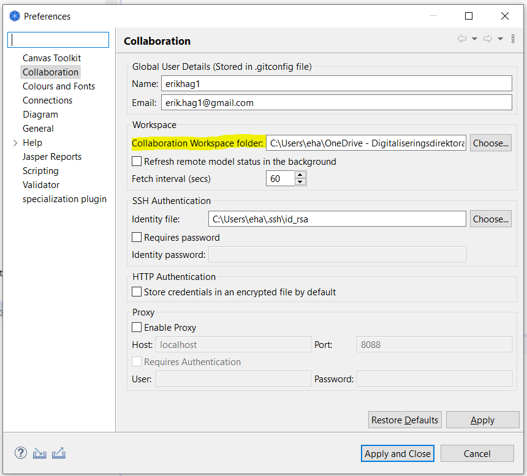

Praktiske tips om bruk av Archi
Archi er et gratis og open-source verktøy som støtter Archimate-standarden for arkitekturdokumentasjon, og har tillegg som muliggjør samarbeid rundt felles repository på Github.
1. Generelt
Archi er gratis og i utbredt bruk både i Norge og internasjonalt. Det er derfor inntil videre valgt som samarbeidsplattform for arbeidet med Nasjonal arkitektur.
Dette betyr ikke at andre verktøy ikke kan brukes. Archi mangler endel funksjonalitet som finnes i mange andre verktøy, så integrajoner på tvers av ulike verktøy er aktuelt.
2. Archi repository på GitHub
Et felles Archi-repository for arbeidet med nasjonal arkitektur finnes på Github, her: https://github.com/nasjonal-arkitektur/archi-collab-nab. Dette finnes også publisert som navigerbare nettsider her: https://nasjonal-arkitektur.github.io/models/near-no/.
Gi beskjed til nasjonalarkitektur@digdir.no om du ønsker skriverettigheter til dette biblioteket.
| I tillegg til dette biblioteket, finnes andre modeller som du kanskje også er interessert i. Se modellsamling på github |
3. Installer og konfigurer Archi
-
Last ned og installer Archi
Last ned og installer siste versjon av Archi fra https://www.archimatetool.com/download/
-
Konfigurer "diagram appearance"
Det er generelt ønskelig at de fleste symboler har samme størrelse, Standard symbolstørrelse settes slik at det er plass til 4 linjer med "litt lange ord"; se figur nedenfor. Dette holder for de fleste formål. Det velges videre å bruke gradienter i fargevisningen, fordi dette for mange oppleves som et mer "profesjonelt" uttrykk.
Figur: Konvensjon for konfigurasjon av symbolstørrelser og fargegradient
.
-
Konfigurer foretrukne Archi standardfigurer
Det er sterkt ønskelig å standardisere på symbolbruken. Archimate-standarden gir valgmuligheter som kan forvirre. Foretrukne standardfigurer konfigureres under menyen Edit | Preferences | Diagram | Default Figures. Benytt da valg som vist i følgende figur.
 Figur 1. Figur: Konvensjon for konfigurasjon av default figures i Archi
Figur 1. Figur: Konvensjon for konfigurasjon av default figures i Archi
| Archi har per januar 2019 begrenset funksjonalitet for dette. En har f.eks, ikke noen alternativer for Actor. En kan heller ikke benytte egne symboler. |
4. Installer og konfigurer coArchi collaboration plugin
-
Produktdokumentasjon
Gjør deg gjerne kjent med brukerveiledningen på https://github.com/archimatetool/archi-modelrepository-plugin - det er ikke sikkert at oppskriften som følger på norsk her er komplett eller oppdatert.
-
Skaff deg en GitHub-bruker
Du trenger en brukerkonto på GitHub. Dersom du ikke allerede har en GitHub-bruker, kan du skaffe deg det her.
Se eventuelt også praktiske tips om bruk av GitHub for annen informasjon om GitHub (ikke nødvendig her).
-
Last ned og installer Collaboration Plugin
Last ned og installer CoArchi plugin fra https://www.archimatetool.com/plugins/. Collaboration-menyen skal da komme til syne, slik:

-
Konfigurer Collaboration Plugin
Sett inn ditt git brukernavn (Name) og e-post (Email), og mappe-navnet (Collaboration Workspace folder) der du ønsker at Archi skal legge filene når du importerer fra "Github-repoet".

5. Importer Github-repository
Velg Import Remote Model to Workspace fra menyen under Collaboration i Archi, og oppgi https://github.com/nasjonal-arkitektur/archi-collab-nab som URL og oppgi ditt git brukernavn og passord.
| Det arbeides per høst 2020 med oppsplitting av det komplette biblioteket i flere deler, der det skilles mellom gjeldende versjon og ulike deler som enda ikke er kvalitetssikret og eventuelt kan tilhøre ulike organisasjoner. Se eget avsnitt om dette. |
Når du klikker OK, vil det bli opprettet en mappe i filsystemet på din maskin med det aktuelle modellnavnet, som undermappe til den mappen du har satt opp i Preferences (se over).
Det vil dessuten komme til syne en linje i Collaboration Workspace med det aktuelle modellnavnet.
| Om du ikke får øye på panelet for Collaboration Workspace, kan du prøve Toggle Collaboration Workspace fra menyen. Det kan også hende at du finner panelet i en annen del av brukergrensesnittet (paneler kan flyttes på). |
Dobbeltklikk til slutt modellnavnet (eks. nasjonalt-arkitekturbibliotek) i Collaboration Workspace for å få det åpnet i modelltreet (Models).
6. Endring og synkronisering
De endringene du gjør blir ikke synlige for andre før du publiserer endringene dine. Det finnes flere valg i Collaboration-menyen for synkronisering. Tips:
-
Bruk Refresh om du bare vil laste ned endringer som andre har gjort (git pull).
-
Publish gjør både Refresh, Commit og Publish - alt i ett.
NB: Om flere jobber på de samme modellene samtidig, kan det bli behov for litt kompliserte "merge-operasjoner". Om du opplever problemer med dette, er det fint om du melder fra via en _issue i GitHub (eller per e-post til nasjonalarkitektur@digdir.no).
7. Tips for å finne og gjenåpne en lukket Archi-modell lokalt
Collaboration-plugin oppretter en .git undermappe som ikke uten videre er synlig, der det blant annet ligger en temp.archimate fil. Det er denne filen som åpnes i Archi når du har importert biblioteket. Nyttig å vite dersom du f.eks. har kommet til å lukke modellen fra workspace i Archi før du har publisert endringene dine. Det er altså bare å åpne denne filen, så kommer den opp i Archi, helt tilsvarende "normale" Archi-filer og med samme innhold som klonet og eventuelt modifisert modell.

8. Avanserte tips for samarbeid om Archimate-innhold i verktøyet Archi
| Archi er gratis Open Source programvare, og støtter gjentatt import og merge av andre modeller fra og med Archi versjon 4.7.1 (juli 2020). Dette gir nye muligheter for gjenbruk og samarbeid, der involverte parter benytter samme verktøy. Dette kan ikke forutsettes, men er tilfelle for noen sektorer og virksomheter i Norge og i EU per 2020. |
8.1. Brukstilfelle 1: Integrer nasjonalt Archi-bibliotek i ditt eget Archi-bibliotek
-
Opprett ditt eget bibliotek (Archi-modell).
-
Få fatt i archi-filen til det nasjonale biblioteket. En måte å gjøre dette på, er via coArch plugin https://github.com/nasjonal-arkitektur/ac-nab-gjeldende, og så benytte temp.archimate som ligger under mappen .git (se over).
-
Importer archimate-filen fra det nasjonale biblioteket inn i ditt bibliotek.
-
Importer deretter oppdaterte versjoner av det nasjonale biblioteket.
Archi vil ikke slette verken folders, views eller elementer ved ny "import another model into selected model". Start derfor gjerne med å slette alle folders (og implisitt alle views) før ny import - så blir det ikke hengende igjen folders og views som skulle ha vært slettet. Etter ny import, kan en også slette ubrukte elementer og relasjoner (egne scripts for dette finnes).
Merk: Det vil være mulig å gjøre endringer i din lokale versjon av det nasjonale biblioteket og spille tilbake tl Digdir. Se Brukstilfelle 3.
8.2. Brukstilfelle 2: Samarbeid med andre i din virksomhet om et Archi-bibliotek som er integrert med det nasjonale Archi-biblioteket.
Gitt at du allerede har importert det nasjonale biblioteket inn i ditt eget, kan du nå dele dette videre via coArchi. Samme oppskrift for deling via coArchi som ellers gjelder.
Kort oppskrift:
-
Opprett et git repo med minst en fil. Dette kan f.eks gjøres slik: Logg inn på din org under github.com; klikk Add; oppgi repository name; sjekk av Public; sjekk av Add a readme file; klikk Add repository.
-
Via menyen under Collaboration: Add local model to workspace and publish. Du får da opp en dialog hvor du angir URL til det nyopprettede repoet.
-
Via menyen under Collaboration: Publish changes.
8.3. Brukstilfelle 3: Integrer eksterne Archi-biblioteker inn i det nasjonale Archi-biblioteket
Import av eksterne biblioteker inn i det nasjonale biblioteket, bør gjøres av den som er ansvarlig for det nasjonale biblioteket. Opprydding og feilretting kan være påkrevd.
9. Avanserte tips om verktøyuavhengig samarbeid om Archimate-modeller
9.1. Generelt
Arcimate-modeller kan utveksles mellom ulike verktøy gjennom et standardisert utvekslingsformat. Dette støttes av de fleste verktøy, og fungerer stort sett greit for engangs eksport-import og så lenge det ikke er gjort utvidelser i metamodellen (objekttyper, attributter, viewpoints).
En kan f.eks. uten videre eksportere views og objekter fra det nasjonale Archi- arkitekturbiblioteket og importere i Visual Paradigm. Ved første øyekast ser modellene ganske like ut.
9.2. Import av utvidelser - attributter
Nasjonalt arkitekturbibliotek benytter et uvidet sett av Archimate-attributter, slik dette støttes i verktøyet Archi. Hvordan få med disse ved import til et annet verktøy?
Måten å gjøre dette på vil variere fra verktøy til verktøy. Dette er bare delvis testet for import av modeller fra det Archi-baserte biblioteket som benyttes i Nasjonalt arkitekturbibliotek.
Eksempel: Ved import til Software AG ARIS, må en først utvide metamodellen i ARIS med identisk navnede attributter som i Archi. Straks disse er definert, fungerer importen uten videre.
9.4. Gjentatt import og merge mellom ulike verktøy
For å få til "merge" med tidligere importerte modeller og objekter, kreves en form for merge-mekanisme som det per i dag ikke kan forventes at støttes ut-av-esken på tvers av ulike Archimate-verktøy.
 Uferdig innhold:
Uferdig innhold:
Foreløpig hypotese: Det er en overkommelig jobb å utvikle scripts eller programmer i ulike verktøy som gjør slik "merge" ved gjentatt import fra et annet verktøy, gitt et minimum av standardisering for aktuelle brukstilfeller.
| For gjentatt import og merge av objekter som kan være renavnet eller ha samme navn som andre objekter, kreves i praksis identifisering av objekter gjennom globalt unike identifikatorer. For at dette skal fungere, må en unngå utilsiktet endring av globalt unike identifikatorer for objekter i kildesystemet. |
10. Archi scripts fra Difi for støtte til administrasjon og modellering
Difi har utviklet noen scripts for å effektivisere modellering og administrasjon av arkitekturbibliotek. Disse scriptene er gjort i jArchi med bruk av Archi-s Scripting Plugin, og krever installasjon av Archi-s Scripting Plugin for å kunne kjøres.
Se praktiske Archi scripts for mer informasjon om funksjonalitet og praktisk bruk av disse scriptene.